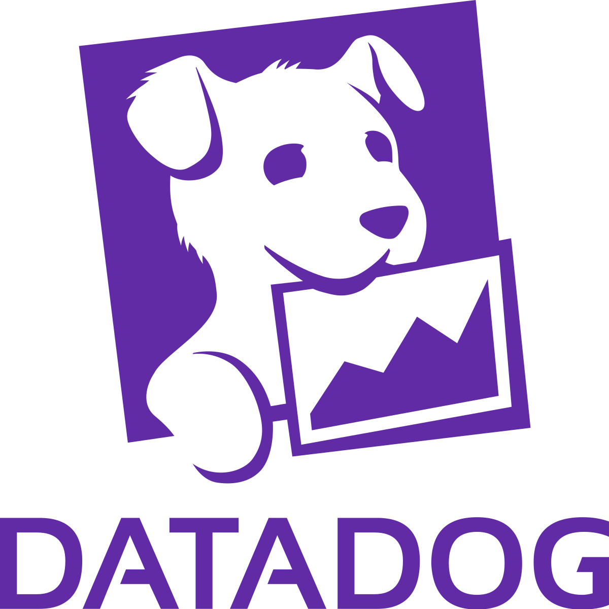

Les plus significatives
Expériences
-
2023 – Actuellement
Maplr
Ingénieur Cloud DevOps
Montréal, CanadaARCHITECTURE CLOUD


Conception d’une architecture cloud générique GCP dans le but d’héberger de multiples applications.
Utilisation de Terraform et Github (Github Actions) pour automatiser la livraison.
Travail réalisé à partir du repository terraform-example-foundation afin de respecter les bonnes pratiques d’organisation et de sécurité.
-
2020 - 2023
Dekra
Ingénieur Cloud DevOps
Bordeaux, FranceCHAÎNE CI/CD, GITLAB


Dans un contexte de management agile et une architecture en micro-services cloud native :
1 ) Conception et réalisation complète de toute la chaîne CI/CD via Gitlab :
- Build, test and deploy du back (.NET), front (React) et mobile (React Native)
- Build des images Docker
- Recherche des vulnérabilités (Anchore)
- Stockage des images Docker sur des registries Azure ou Gitlab
- Déploiement sur des clusters Kubernetes (AKS) en utilisant Kustomize
Cette chaîne CI/CD a permis d’augmenter significativement la productivité des développeurs tout en leur donnant de l’autonomie : ce sont eux qui livrent jusqu’en production, plusieurs fois par semaine.
Une fois le code poussé, la livraison sur les différents environnements se fait en quelques minutes.
2 ) Mise en place d’un script de supervision des paramètres de chaque repository.
De nombreux repositories doivent être paramétrés et maitrisés notamment pour :
- Les Merge Requests (ou Pull requests)
- Les relectures et approbations
- La protection des branches
Le script, en Python, tourne périodiquement (lui-même dans un repository Gitlab avec une Scheduled pipeline) pour corriger les écarts automatiquement.
3 ) Création d’une pipeline quotidienne permettant de scanner les images Docker du registry Azure à la recherche de CVE via Anchore.
Cette pipeline remonte par mail les CVEs les plus récentes afin que l’on sache quelle image mettre à jour et livrer.
4 ) Dockerfile: Les runners Gitlab utilisent des images Docker faites sur mesure afin d’optimiser la durée des jobs.
Axe d’amélioration : Utiliser la pratique Gitops afin de sécuriser notre cluster en limitant les accès au strict minimum.
MANAGEMENT DE CLUSTER KUBERNETES

1 ) Supervision et maintenance de 4 clusters Kubernetes sur Azure (AKS)
Utilisation de plusieurs types de ressources :
- Deployments (ce qui implique des ReplicaSets et Pods)
- Services
- IngressRoutes (via Traefik)
- CronJobs (ce qui implique des Jobs)
- HorizontalPodAutoscaler (hpa)
- StatefulSets (notamment pour les pods Keycloak)
- DaemonSets (notamment pour les agents DataDog, 1 par node)
Le tout en utilisant directement kubectl ou k9s et directement depuis Gitlab (CD).
En pratique, il y a un repository central qui contient les fichiers yaml commun à toutes les applications. Les repositories de celles-ci en héritent et précisent leurs particularités, si nécessaires.
On utilise ensuite Kustomize pour agréger tous les fichiers, notamment en prenant en compte les overlays propres à chaque environnement (Le tout dans un job Gitlab).
La configuration des deployments permet d’avoir des pods dont le nombre oscille entre 1 et 5 en fonction de la charge CPU (hpa). Ainsi, les clusters ne sont pas chargés inutilement.
2 ) Automatisation de l’installation (via des pipelines) des services suivants :
- Traefik (Ingress Controller)
- Agents Datadogs
- Keycloak
Le but étant d’être capable de relancer une nouvelle installation en un clic.
CLOUD AZURE ET INFRASTRUCTURE AS CODE

Conception et réalisation complète de l’Infrastructure As Code (IaC) avec terraform
Le but est d’automatiser la création/modification de nos ressources Azure:
- Virtual networks
- Subnets
- Container registries
- Postgres server
- Mongo servers
- Cluster k8s (aks)
- Service bus et ses Topics/Subscriptions
- Keyvaults
Nous sommes capables de reconstruire l’intégralité de notre infrastructure Cloud en (quasiment) un clic à partir d’une Subscription Azure vierge.
De la même manière, on automatise la création de ressources Keycloak et Kubernetes avec les providers Terraform correspondants. Notamment le certificat HTTPS initialement stocké dans un Keyvault Azure et qui doit être livré sur le cluster k8s.
L’IaC est un projet majeur permettant de répondre aux problématiques des Plans de Reprise d’Activité et des Plans de Continuité d’Activité.
-
2012 - 2020
Dekra
Ingénieur développement
Bordeaux, FranceRÉALISATION DE MICRO-SERVICES

Dans un contexte de management Agile, réalisation de 2 micro-services (back et front) :
Les tâches qui nous été confiées :
- Estimer la charge de travail à partir du besoin
- Développer la fonctionnalité
- Développer les tests unitaires
- Livrer sur les différents environnements
Le tout en utilisant :
- .NET Core
- React
- MongoDB
- PostreSQL
Et un peu de Terraform pour créer les Subscriptions du Service-bus Azure et les clients Keycloak.
-
2018
À titre personnel
Développeur
Bordeaux, FranceDÉVELOPPEMENT D’UNE APPLICATION DE GESTION DE BUDGETS


Il s’agit d’une application me permettant de gérer mes comptes comme je l’entends.
L’application est composée d’un back en Python (Flask) et d’un front en Vue.js.
Le tout étant construit sur une instance Gitlab installée sur un NAS personnel avec ses propres runners.
Le NAS héberge également ces services via Docker.
J’ai pu utiliser docker-compose, watchtower et Gitpod pour développer depuis n’importe quelle machine !
-
2012
À titre personnel
Développeur
Bordeaux, FranceRÉALISATION D’UNE PLATEFORME DE VENTE DE VÉHICULE

Semblable à un site de petites annonces mais à destination des professionnels, cette plateforme permet de vendre des véhicules à l’aide d’outils commerciaux tels que les promotions, ventes aux enchères, mix produits, etc...
À partir de spécifications fonctionnelles, je devais analyser la faisabilité et développer la fonctionnalité.
- .NET MVC (C#)
- Javascript
- SQL Server